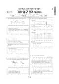

문제지


시험지를 먼저 풀어 보세요. 등급컷·표준점수·난이도는 흐리게 가려 뒀어요.
정답 변경 없음
이의신청 14문항 · 평가원 상세 답변 1문항
이의 요지
이의신청의 주된 내용은 ‘그림에 잘못된 부분이 있기 때문에 이 문항은 오류이며 전원 정답 처리되어야 한다’는 것입니다.
평가원 답변
이 문항은 2015 개정 고등학교 과학과 교육과정의 성취기준 ‘등가속도 운동에서 일-운동 에너지 관계를 설명할 수 있다.’를 근거로, 물체가 운동하면서 지나는 구간 S에서 감소한 역학적 에너지 과 구간 S에서 감소한 역학적 에너지 의 비를 구하는 문항입니다.이의신청의 주된 내용은 ‘그림에 잘못된 부분이 있기 때문에 이 문항은 오류이며 전원 정답 처리되어야 한다’는 것입니다.이의신청의 내용과 같이 그림에서 구간 S이 정확히 표현되지는 않았습니다. 그러나 이 문항에서는 그림의 형태가 문제 해결 과정에 영향을 주지 않습니다. 이 문항에서 제시하고 있는 그림은 문두에서 설명하고 있는 문제 상황에 대한 이해를 돕기 위해 개략적으로 제시된 자료라는 점을 고려할 때, 이 문항을 ‘정답 없음’으로 처리하는 것은 타당하지 않습니다.따라서 이 문항의 정답을 ①번으로 유지합니다.<서식 9> 이의신청 답변자료(보도자료용)
원문 표에서 읽어낸 문항만 적었어요. 전체 목록은 아래 답변자료 원문에 있어요.
발행 기관: 한국교육과정평가원(KICE). 파일 위치: 이 사이트가 보관한 사본. 저작권은 발행 기관에 있습니다. 원본과 다르거나 게시 중단이 필요하면 연락처로 알려 주세요. 등급컷 출처 구분은 데이터 원칙에서 설명합니다.